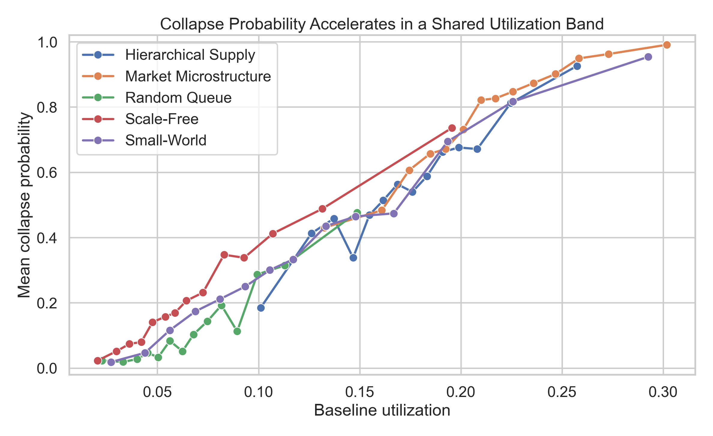
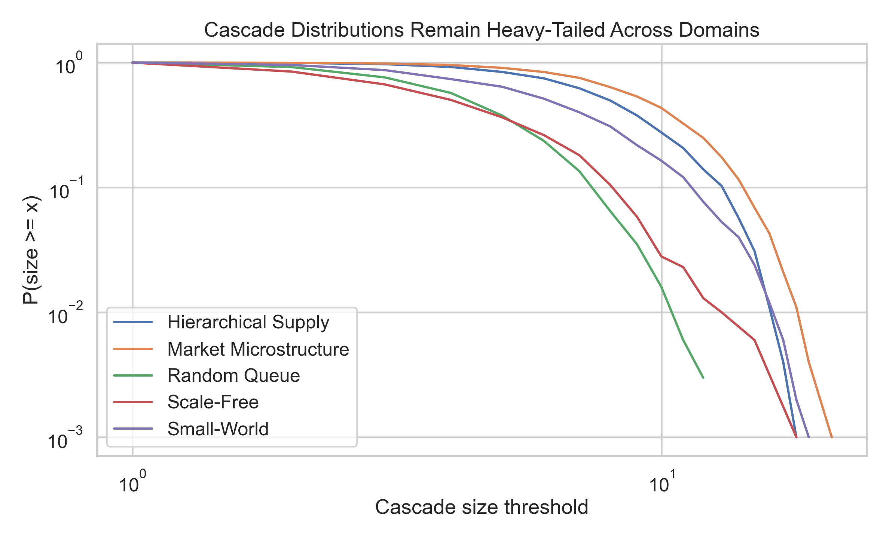
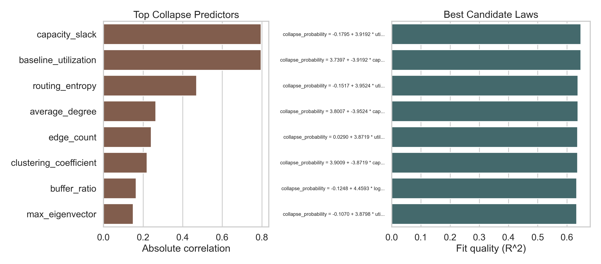
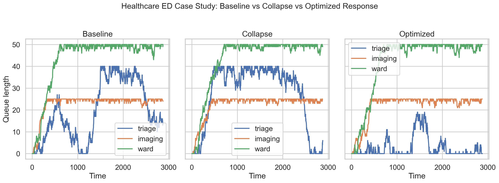

Across 5,000 systems and 5 topology families, StressLab found that collapse risk accelerates sharply once baseline utilization enters a shared transition band around 0.10-0.19, with shared variance and recovery-lag warning signals appearing before failure across domains.
runs\flagship_healthcare_case_workspace\2026-03-17_194529_994433_flagship_healthcare_case_study_batch| topology_type | topology_label | critical_utilization | transition_low | transition_high | peak_slope | mean_collapse_probability |
|---|---|---|---|---|---|---|
| scale_free | Scale-Free | 0.061827 | 0.078714 | 0.180735 | 8.504414 | 0.247000 |
| random_queue | Random Queue | 0.096818 | 0.104050 | 0.140489 | 12.674950 | 0.137000 |
| hierarchical_supply | Hierarchical Supply | 0.152108 | 0.106869 | 0.249759 | 9.125011 | 0.558333 |
| small_world | Small-World | 0.186424 | 0.103293 | 0.205428 | 7.542121 | 0.378000 |
| market_microstructure | Market Microstructure | 0.202117 | 0.139265 | 0.208130 | 7.207031 | 0.768000 |
| feature | correlation | score |
|---|---|---|
| capacity_slack | -0.795639 | 0.795639 |
| baseline_utilization | 0.795639 | 0.795639 |
| routing_entropy | 0.470095 | 0.470095 |
| average_degree | -0.263592 | 0.263592 |
| edge_count | -0.241198 | 0.241198 |
| clustering_coefficient | -0.219609 | 0.219609 |
| buffer_ratio | 0.164216 | 0.164216 |
| max_eigenvector | 0.150227 | 0.150227 |
| coupling_strength | -0.140501 | 0.140501 |
| node_count | -0.121322 | 0.121322 |
| target | feature | model_type | coefficient | intercept | exponent | r2 | observations | formula | complexity | source |
|---|---|---|---|---|---|---|---|---|---|---|
| collapse_probability | utilization+centralization_index | multivariate_linear | 3.919246 | -0.179536 | 0.294189 | 0.647397 | 5000 | collapse_probability = -0.1795 + 3.9192 * utilization + 0.2942 * centralization_index | 85 | fragility |
| collapse_probability | capacity_slack+centralization_index | multivariate_linear | -3.919246 | 3.739711 | 0.294189 | 0.647397 | 5000 | collapse_probability = 3.7397 + -3.9192 * capacity_slack + 0.2942 * centralization_index | 88 | fragility |
| collapse_probability | utilization+redundancy_index | multivariate_linear | 3.952377 | -0.151676 | 0.543641 | 0.637317 | 5000 | collapse_probability = -0.1517 + 3.9524 * utilization + 0.5436 * redundancy_index | 81 | fragility |
| collapse_probability | capacity_slack+redundancy_index | multivariate_linear | -3.952377 | 3.800700 | 0.543641 | 0.637317 | 5000 | collapse_probability = 3.8007 + -3.9524 * capacity_slack + 0.5436 * redundancy_index | 84 | fragility |
| collapse_probability | utilization+coupling_strength | multivariate_linear | 3.871861 | 0.028998 | -0.346175 | 0.636136 | 5000 | collapse_probability = 0.0290 + 3.8719 * utilization + -0.3462 * coupling_strength | 82 | fragility |
| collapse_probability | capacity_slack+coupling_strength | multivariate_linear | -3.871861 | 3.900859 | -0.346175 | 0.636136 | 5000 | collapse_probability = 3.9009 + -3.8719 * capacity_slack + -0.3462 * coupling_strength | 86 | fragility |
| collapse_probability | utilization | log | 4.459317 | -0.124757 | NaN | 0.633373 | 5000 | collapse_probability = -0.1248 + 4.4593 * log1p(utilization) | 60 | fragility |
| collapse_probability | utilization+routing_entropy | multivariate_linear | 3.879833 | -0.106966 | 0.016518 | 0.633078 | 5000 | collapse_probability = -0.1070 + 3.8798 * utilization + 0.0165 * routing_entropy | 80 | fragility |
| collapse_probability | capacity_slack+routing_entropy | multivariate_linear | -3.879833 | 3.772866 | 0.016518 | 0.633078 | 5000 | collapse_probability = 3.7729 + -3.8798 * capacity_slack + 0.0165 * routing_entropy | 83 | fragility |
| collapse_probability | utilization+capacity_slack | multivariate_linear | 2.568646 | 1.236055 | -1.332591 | 0.633041 | 5000 | collapse_probability = 1.2361 + 2.5686 * utilization + -1.3326 * capacity_slack | 79 | fragility |
| topology_type | topology_label | best_model | sample_size | alpha | log_likelihood_gap |
|---|---|---|---|---|---|
| market_microstructure | Market Microstructure | lognormal | 1000 | 1.472681 | 467.405786 |
| hierarchical_supply | Hierarchical Supply | lognormal | 1000 | 1.510951 | 434.811327 |
| random_queue | Random Queue | lognormal | 1000 | 1.784196 | 294.729240 |
| small_world | Small-World | lognormal | 1000 | 1.609559 | 214.329668 |
| scale_free | Scale-Free | lognormal | 998 | 1.840400 | 129.070765 |
| metric | collapse_mean | stable_mean | fragile_mean | robust_mean | separation |
|---|---|---|---|---|---|
| variance_increase | 4.535714e+06 | 4.147499e+06 | 4.573395e+06 | 4.101277e+06 | 388215.362454 |
| recovery_lag | 3.387935e+00 | 2.911350e+00 | 3.224520e+00 | 3.064280e+00 | 0.476584 |
| autocorrelation_increase | -2.552599e-02 | -1.815677e-02 | -2.247434e-02 | -2.104629e-02 | -0.007369 |




